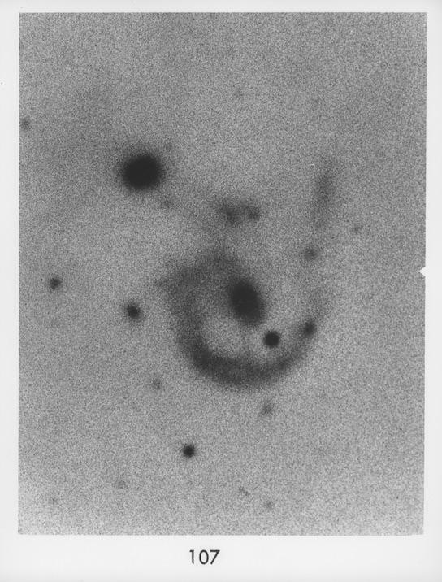
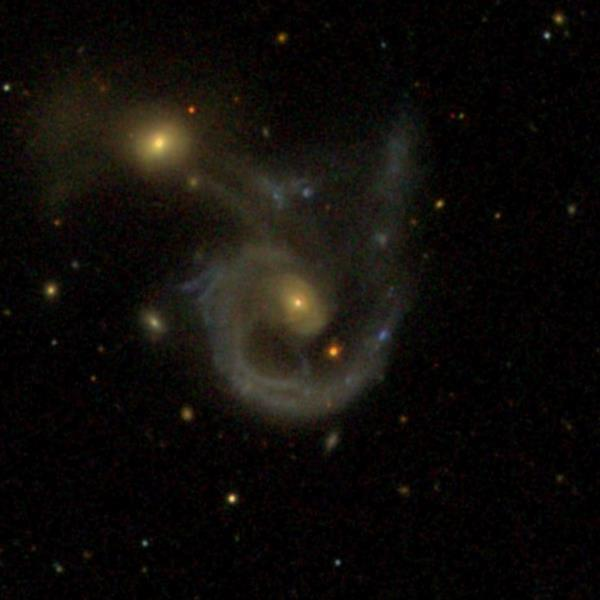
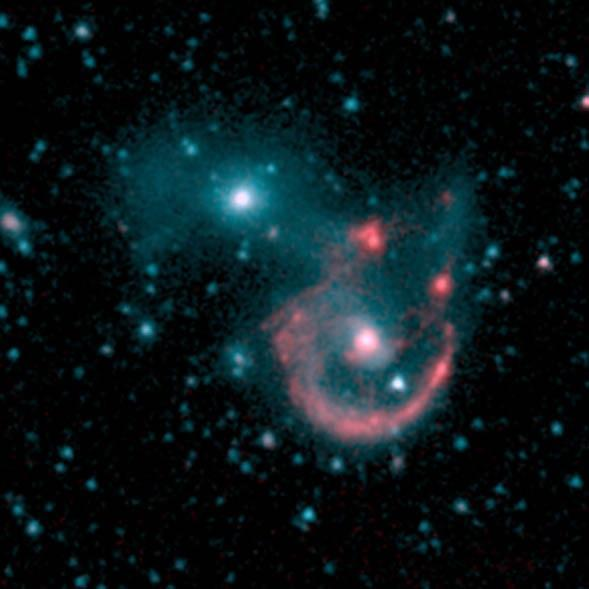
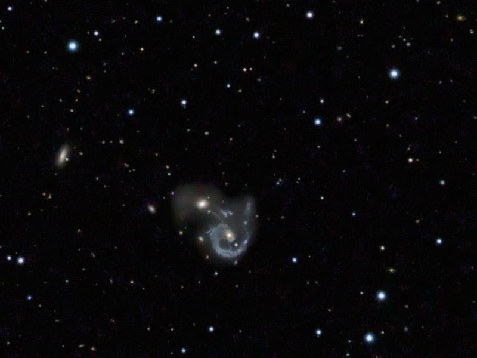

The Tidal Ring/Arm of interacting Arp 107
- Name: Arp 107 (Interacting Pair)
- Aliases: VV 233 = UGC 5984 = MCG +05-26-024 = CGCG 155-031 = PGC 32620/32628
- RA: 10 52 16.7
- Dec: +30 03 55 (Leo Minor)
- Size: 1.6' x 1.2' and 0.5' x 0.4'
- Mag: 14.0V and 14.5V
- Light-travel time: ~466 million years
Arp classified his #107 under "Elliptical and elliptical-like Galaxies connected to spirals". He noted "Double arms lead to the E galaxy, diffuse material out other side of E galaxy." Here's Arp's photo using the Palomar 200-inch.

But like many of the galaxies in Arp's Atlas, this interacting system first appeared in Boris Vorontsov-Velyaminov's 1959 Atlas and Catalogue of Interacting Galaxies as VV 233. The system consists of a disrupted spiral with a small bar-like bulge and a single strong spiral arm with a pretty circular ring-like shape and a straight extension to the northwest. The nucleus is active, exhibiting Seyfert 2 features. A (double) tidal bridge connects the spiral with a small elliptical companion (MCG +05-26-025) to the northeast and a diffuse halo extends mostly east of the companion. Here's the SDSS image of the pair---

In mid-infrared images (Spitzer), the spiral looks more like an asymmetric colliding ring galaxy -- probably an off-center collision. In fact, Arp 107 is listed as a collisional ring in the 2009 "Atlas and Catalog of Collisional Ring Galaxies" by Barry Madore et al. In this Spitzer image (color-coded by infrared wavelength) can you imagine a grinning Cheshire cat?

Both galaxies were easily visible in my 18-inch, though I didn't log much structure in this observation from 5 years ago --
Arp 107 consists of a close pair: MCG +05-26-024, an unusual one-armed spiral and MCG +05-26-025, a compact elliptical off the northeast side. MCG +05-26-024 appeared very faint, moderately large, low surface brightness, very small, slightly brighter core, ill-defined oval halo, ~1.4'x1.0', the arm structure wasn't noticed. MCG +05-26-025, situated just off the northeast edge side [1.1' between centers] appeared faint, very small, round, 12" diameter. It has a higher surface brightness than larger MCG +05-26-025.
I took another look at Arp 107 last May in Jimi's 48-inch and of course recorded the unusual arm/ring structure --
VV 233a = MCG +05-26-024 is the disrupted member of Arp 107 = VV 233 with a long single spiral arm/tidal tail. At 375x it appeared moderately large, slightly elongated, ~1.3' diameter, sharply concentrated with a very small nucleus 12"-15" diameter. The outer portion of the halo resolves into a single, long spiral arm; it begins on the northeast side and rotates counterclockwise for perhaps 150°, fading out on the southwest side. The fainter tail portion to the northwest was not seen. A mag 16.5 star is superimposed [21" SW of center], just inside the end of the arm.
VV 233b = MCG +05-26-025 is 1.2' NE of center. It appeared fairly bright, very small, round, high surface brightness, surrounded by a small halo ~15" diameter. This compact galaxy (considered the collider in the 2009 Madore et al "Atlas and Catalog of Collisional Ring Galaxies") has a much higher surface brightness than the RING system MCG +05-26-024.
This amateur image is from Rick Johnson using a 14" LX200R @ f/10, L=4x10' RGB=2x10', STL-11000XM, Paramount ME

There are a few challenges here. What aperture will reveal the single spiral arm/ring? What about the edge-on spiral 5' ENE? (visible on Rick Johnson's image).
Give it a go and let us know!